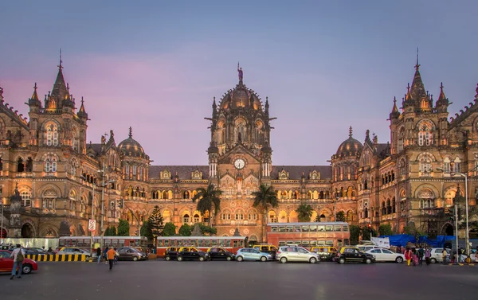

1. OSAKA JAPON

2. MUMBAI INDIA
3. PEKIN CHINA
4. EL CAIRO EGIPTO

Se estima que cerca de la mitad de la poblacion global vive en ciudades, segun datos del ultimo informa ONU-Habitat emitido en 2022. A través de dicho análisis, la Organización de las Naciones Unidas realiza una evaluación anual en torno a cómo se ha desarrollado el crecimiento de las urbes, además de cómo esto afecta en el número de habitantes que residen en las áreas metropolitanas del planeta. Si bien, datos rescatados por National Geographic detallan que el 2023 tuvo ciertos cambios en relación al periodo anterior, el listado de las ciudades más pobladas se mantiene similar.